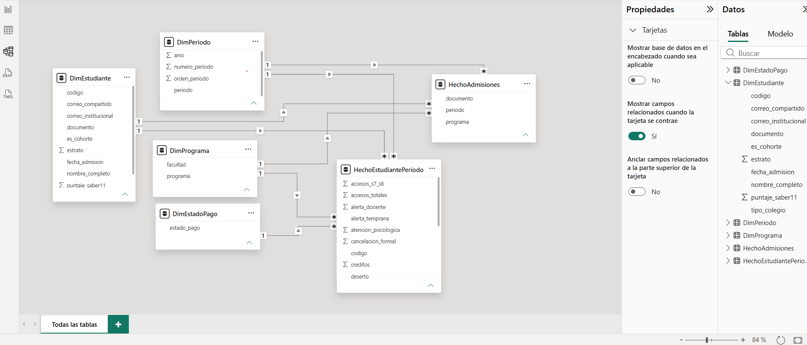
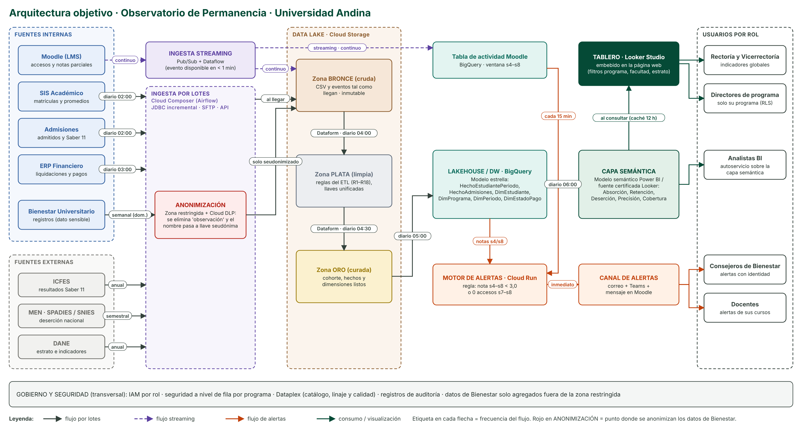

Construcción del ETL
Proceso repetible
El ETL está construido en Power Query (8 consultas encadenadas, parametrizadas con la ruta de la carpeta
de datos). Se vuelve a ejecutar con Inicio → Actualizar sobre los cinco CSV originales: nada se edita a mano.
La consulta final valida automáticamente que la cohorte tenga 1.200 filas, que el documento sea único, que haya 22 columnas
y que no existan claves ambiguas de Bienestar; si algo falla, la actualización se detiene con un error.
Un espejo en Python (verificar_etl.py) aplica las mismas reglas y produce el mismo archivo (hash idéntico en dos ejecuciones).
Para Bienestar se cruza por nombre normalizado + programa (minúsculas, sin tildes, espacios colapsados), lo que resuelve los homónimos: 276 registros → 240 estudiantes, 0 claves ambiguas.
Registro de transformaciones (18 reglas)
| # | Problema | Regla | Etapa |
|---|---|---|---|
| 1 | erp_pagos_2025_2.csv: documento con separadores de miles (1.017.055.478) | Quitar los puntos y dejar el documento como texto de dígitos (1.132 filas corregidas) | Limpieza ERP |
| 2 | estado_pago con mayúsculas inconsistentes (PAGADO, PENDIENTE, ANULADO) | Normalizar a formato título: Pagado, Pendiente, Anulado | Limpieza ERP |
| 3 | fecha_admision en tres formatos (775 dd/mm/aaaa, 296 dd-mmm-aaaa, 409 aaaa-mm-dd) | Detectar el formato y emitir ISO aaaa-mm-dd | Limpieza admisiones |
| 4 | 30 documentos duplicados en admisiones (1.480 → 1.450 admitidos únicos) | Deduplicar por documento conservando el primer registro | Limpieza admisiones |
| 5 | 7 registros con periodo mal digitado 2025-II | Mapear 2025-II → 2025-2 | Limpieza matrículas |
| 6 | 12 matrículas duplicadas de la cohorte (mismo documento, 1.212 registros) | Deduplicar por documento dentro de la cohorte | Conformación de cohorte |
| 7 | La cohorte oficial es solo periodo = 2025-1 y tipo_ingreso = Nuevo | Filtrar antes de deduplicar; resultado obligatorio: 1.200 filas (validado con error automático si no cuadra) | Conformación de cohorte |
| 8 | Programa abreviado en Bienestar (Psico., T. Social, Ing. Inf.…) | Diccionario de equivalencias al nombre oficial | Limpieza Bienestar |
| 9 | Homónimos en Bienestar (mismo nombre, distinto programa) | Cruzar por nombre normalizado + programa; verificado: 0 claves ambiguas, los 276 registros cruzan y quedan 240 estudiantes únicos | Integración Bienestar |
| 10 | nota_parcial_0_100 viene en escala 0–100 y solo en semanas 4, 8, 12, 16 | Agregar por estudiante y convertir a escala 0–5 (nota ÷ 20); calcular nota_prom_s4_s8_0a5, accesos_s7_s8 y accesos_totales | Transformación Moodle |
| 11 | Nombres con diferencias de tildes, mayúsculas y espacios entre sistemas | fnNormalizarNombre: minúsculas, sin tildes, espacios colapsados (llave de cruce) | Integración |
| 12 | promedio_periodo vacío en 2025-2 (semestre sin cerrar) y en 25 estudiantes de la cohorte en 2025-1 (vacío real en la fuente, sin otra fila con dato) | Vacío esperado: no se imputa en ningún caso; la tabla final usa solo datos de 2025-1 + flag matriculado_2025_2 | Validación |
| 13 | Programa con variantes de digitación en matrículas (ADMON EMPRESAS, PSICOLOGIA, ING. INFORMATICA…, 139 registros) | Diccionario de equivalencias al nombre oficial del programa | Limpieza matrículas |
| 14 | La columna observacion de Bienestar es dato sensible ("Reservado") | No se lleva a la tabla final; solo se conservan conteos por tipo de registro | Integración Bienestar |
| 15 | 2 correos institucionales asignados a homónimos distintos (4 estudiantes: dos Manuel Osorio y dos Melissa Giraldo) | Marcar correo_compartido = TRUE; sus métricas de Moodle son compartidas y el tablero debe tratarlas con cautela | Integración Moodle |
| 16 | promedio_periodo (escala oficial 0,0–5,0) con dos defectos: 40 valores con decimal en coma (3,7 — con cultura en-US la coma se tomaría como miles y daría 37) y 13 valores sin separador decimal, multiplicados por 10 (24 = 2,4) | Coma → punto antes de convertir a número; todo valor fuera de la escala 0–5 se divide entre 10. Verificado: rango final 1,6–5,0 | Limpieza matrículas |
| 17 | 5 matrículas duplicadas de estudiantes de la cohorte en 2025-2 (1.030 registros) | Deduplicar el hecho por documento + periodo: 1.030 registros → 1.025 filas; la clave del hecho queda única (validado con error automático si no cuadra) | Modelo dimensional (Reto 2) |
| 18 | 29 documentos del SIS con puntos de miles (1.000.902.633), todos en continuidad 2025-2, no coinciden con la llave sin puntos | Quitar puntos y espacios exteriores, conservar tipo texto y aplicar a todos los periodos antes de deduplicar y cruzar; recupera 29 retenidos que se clasificaban como desertores | Limpieza matrículas |
Cobertura de los cruces sobre la cohorte
| Fuente | Llave | Estudiantes cruzados |
|---|---|---|
| Admisiones | documento | 1.200 (100 %) |
| Moodle agregado | correo_institucional | 1.200 (100 %; 4 con correo compartido, regla 15) |
| ERP pagos 2025-2 | documento | 1.132 (los 68 sin liquidación son esperados: no renovaron) |
| Matrícula 2025-2 | documento | 1.025 (retención corregida 85,4 %) |
| Bienestar | nombre + programa | 240 (20 %) |
Descargar la tabla limpia de la cohorte
⬇ cohorte_2025_1_limpia.csv ⬇ Versión para Excel en españolLa primera usa punto decimal (estándar CSV). La versión para Excel usa ; como separador y coma decimal,
para que valores como 3.7 no se lean como 37 en un equipo configurado en español.
Modelo dimensional
Granularidad
La tabla de hechos HechoEstudiantePeriodo tiene una fila por estudiante de la cohorte 2025-1 por periodo matriculado
(clave única documento + periodo: 1.200 filas en 2025-1 + 1.025 en 2025-2 = 2.225).
Tabla de hechos y medidas
Aditivas (se pueden sumar):
Créditos matriculadosValor liquidadoAccesos totales Moodle Registros de BienestarEstudiantes cohorteRetenidos DesertoresAlertados
No aditivas (se promedian o se calculan como cociente, nunca se suman):
Promedio del periodoNota media s4–s8Puntaje Saber 11 AbsorciónRetenciónDeserción PrecisiónCobertura
Hecho auxiliar: HechoAdmisiones (una fila por admitido, 1.450), denominador de la absorción.
Dimensiones (4)
- DimEstudiante (1.450): documento, estrato, tipo de colegio, Saber 11, fecha de admisión.
- DimPrograma (6): programa y facultad derivada.
- DimPeriodo (2): 2025-1 y 2025-2.
- DimEstadoPago (5): Pagado, Pendiente, Anulado, Sin liquidación, No aplica.
7 relaciones 1:* de dimensión a hecho, dirección única: el filtro por programa y facultad viaja desde DimPrograma y el de estrato desde DimEstudiante.

Observatorio_Permanencia.pbix).Arquitectura objetivo

¿Dónde se anonimizan los datos de Bienestar?
En la ingesta, antes de entrar al Data Lake (caja roja del diagrama). Los registros llegan a una zona restringida
donde se cruzan por nombre normalizado + programa y Cloud DLP elimina la columna observacion y reemplaza el nombre
por una llave seudónima. De ahí en adelante (lake, DW y tablero) solo viajan conteos por tipo de registro;
las identidades solo las ven los consejeros de Bienestar a través del canal de alertas.
Frecuencia de cada flujo
| Flujo | Tipo | Frecuencia |
|---|---|---|
| Moodle → Pub/Sub + Dataflow → Bronce y tabla de actividad | Streaming | Continuo (evento disponible en < 1 min) |
| SIS Académico → Bronce | Lote | Diario 02:00 (incremental) |
| Admisiones → Bronce | Lote | Diario 02:00 |
| ERP Financiero → Bronce | Lote | Diario 03:00 |
| Bienestar → zona restringida (DLP) → Bronce | Lote | Semanal (domingo) |
| ICFES / DANE → Bronce | Lote | Anual |
| SPADIES / SNIES → Bronce | Lote | Semestral |
| Bronce → Plata → Oro (Dataform) | Lote | Diario 04:00 y 04:30 |
| Oro → BigQuery (modelo estrella) | Lote | Diario 05:00 |
| BigQuery → capa semántica | Lote | Diario 06:00 |
| Capa semántica → tablero | Consulta | Al abrir el tablero (caché 12 h) |
| Tabla de actividad + notas → motor de alertas | Micro-lote | Cada 15 minutos |
| Motor de alertas → canal → consejeros y docentes | Evento | Inmediato |
Justificación de cada tecnología
| Componente | Tecnología | Por qué |
|---|---|---|
| Ingesta por lotes | Cloud Composer (Airflow) | Programa y reintenta las cargas diarias con dependencias entre tareas; es el estándar abierto de orquestación. |
| Ingesta streaming | Pub/Sub + Dataflow | Recibe los eventos de Moodle en segundos y escala solo; permite la alerta "casi en tiempo real". |
| Anonimización | Cloud DLP + zona restringida | Detecta y enmascara datos personales antes del lago; cumple la Ley 1581 de 2012 (habeas data). |
| Data Lake | Cloud Storage (Bronce/Plata/Oro) | Almacenamiento barato e ilimitado; las zonas separan dato crudo, limpio y curado y permiten reprocesar. |
| Transformación | Dataform (SQL) | Las reglas del ETL quedan versionadas en Git y se pueden volver a ejecutar sobre los datos crudos. |
| Lakehouse / DW | BigQuery | Sin servidores que administrar, consulta el lago directamente y aloja el modelo estrella del Reto 2. |
| Capa semántica | Modelo semántico Power BI / fuente certificada Looker | Define una sola vez Absorción, Retención, Deserción, Precisión y Cobertura: todos ven la misma cifra. |
| Tablero | Looker Studio | Gratuito, se publica y se embebe en la web con filtros en vivo, sin licencias para los lectores. |
| Motor de alertas | Cloud Run | Ejecuta la regla de alerta cada 15 min y solo cobra mientras corre. |
| Canal de alertas | Correo + Teams + mensaje Moodle | Llega a consejeros y docentes donde ya trabajan, sin herramientas nuevas. |
| Gobierno | IAM + RLS + Dataplex | Cada rol ve solo lo suyo (p. ej. un director solo su programa) y queda el linaje de cada dato. |
Tablero del Observatorio
Si el tablero no carga, ábralo en una pestaña nueva: tablero en Looker Studio.
Los 7 indicadores frente a la meta (sin filtros)
Metas definidas por el equipo
| Indicador | Cumple | En riesgo | No cumple | Por qué |
|---|---|---|---|---|
| Absorción | ≥ 85 % | 80 – 85 % | < 80 % | 85 de cada 100 admitidos deberían matricularse. |
| Retención | ≥ 85 % | 80 – 85 % | < 80 % | Llevar la deserción de primer periodo por debajo de 15 %. |
| Deserción por programa | ≤ 15 % | 15 – 20 % | > 20 % | Complemento de la meta de retención. |
| Promedio de la cohorte | ≥ 3,5 | 3,0 – 3,5 | < 3,0 | 3,0 aprueba; 3,5 deja margen académico. |
| Alertados (% cohorte) | ≤ 25 % | 25 – 35 % | > 35 % | Capacidad de consejería (≈ 300 casos por cohorte). |
| Precisión de la alerta | ≥ 50 % | 35 – 50 % | < 35 % | Al menos 1 de cada 2 alertados debe ser riesgo real. |
| Cobertura de la alerta | ≥ 75 % | 60 – 75 % | < 60 % | Detectar a 3 de cada 4 desertores. |
Indicadores por programa
| Programa | Absorción | Retención | Deserción | Promedio | Alertados | Precisión | Cobertura |
|---|---|---|---|---|---|---|---|
| Administración de Empresas | 83,0 % | 81,9 % | 18,1 % | 3,34 | 87 | 37,9 % | 71,7 % |
| Contaduría Pública | 81,9 % | 85,7 % | 14,3 % | 3,42 | 42 | 28,6 % | 54,5 % |
| Ingeniería Industrial | 86,3 % | 87,5 % | 12,5 % | 3,39 | 50 | 36,0 % | 81,8 % |
| Ingeniería Informática | 82,2 % | 83,5 % | 16,5 % | 3,39 | 72 | 31,9 % | 59,0 % |
| Psicología | 82,3 % | 89,5 % | 10,5 % | 3,38 | 72 | 23,6 % | 70,8 % |
| Trabajo Social | 80,9 % | 85,5 % | 14,5 % | 3,38 | 47 | 38,3 % | 81,8 % |
| Total universidad | 82,8 % | 85,4 % | 14,6 % | 3,38 | 370 | 32,7 % | 69,1 % |
Punto de color = semáforo de deserción frente a la meta de 15 %.
Lectura
La retención (85,4 %) y la deserción (14,6 %) cumplen la meta en el total, pero no en todos los grupos: Administración de Empresas (18,1 %) e Ingeniería Informática (16,5 %) están en riesgo y el estrato 1 tiene la deserción más alta (22,0 %). La alerta temprana detecta a 7 de cada 10 desertores (cobertura 69,1 %), pero solo 1 de cada 3 alertados termina desertando (precisión 32,7 %, en rojo): sirve como primer filtro, aunque genera muchos falsos positivos y conviene ajustar la regla.
⬇ Fuente de datos del tablero (sin datos personales)Referencias
Armbrust, M., Ghodsi, A., Xin, R., & Zaharia, M. (2021). Lakehouse: A new generation of open platforms that unify data warehousing and advanced analytics. En Proceedings of the 11th Conference on Innovative Data Systems Research (CIDR).
Fundación Universitaria Católica del Norte. (2025a). Introducción a la inteligencia de negocios. Elemento de competencia 1: Introducción, pirámide de consumo de información y metodologías [Material de curso]. Programa de Ingeniería Informática, Facultad de Ingeniería y Ciencias Ambientales.
Fundación Universitaria Católica del Norte. (2025b). Introducción a la inteligencia de negocios. Elemento de competencia 2: Modelos de datos, estrategias de ETL y arquitecturas de datos [Material de curso]. Programa de Ingeniería Informática, Facultad de Ingeniería y Ciencias Ambientales.
Fundación Universitaria Católica del Norte. (2025c). Introducción a la inteligencia de negocios. Elemento de competencia 3: Explotación de datos, indicadores clave y gestión tecnológica [Material de curso]. Programa de Ingeniería Informática, Facultad de Ingeniería y Ciencias Ambientales.
Kimball, R., & Ross, M. (2013). The data warehouse toolkit: The definitive guide to dimensional modeling (3.ª ed.). Wiley.
Kleppmann, M. (2017). Designing data-intensive applications. O'Reilly Media.
Tinto, V. (1975). Dropout from higher education: A theoretical synthesis of recent research. Review of Educational Research, 45(1), 89–125. https://doi.org/10.3102/00346543045001089